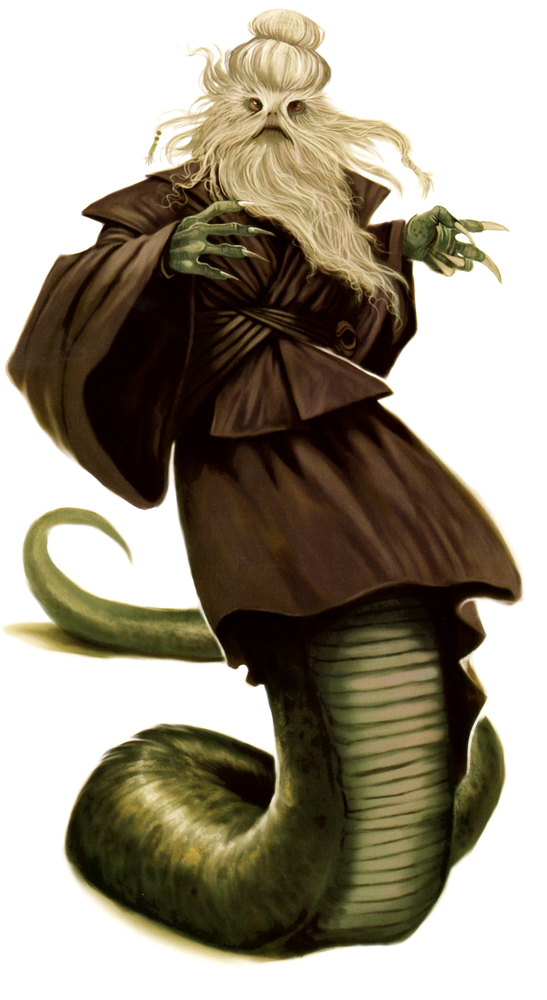

Thisspiassian
Special Abilities: Thisspiasians begin the game with s one rank in Discipline. They still may not train Discipline above rank 2 during character creation.
Rest and Meditation: Thisspiasians need very little sleep to function. They only need to sleep for two hours to heal all strain they are suffering from, instead of for a full night (they cannot sleep multiple times in a day, however!). In addition, once per session Thisspiasians may spend ten minutes meditating; if they do so, they heal strain equal to twice their ranks in Discipline.
Thisspiasians are a people with great passions tempered by measured calm and discipline. They are attached to tradition but also quick to adopt the new, blending both together seamlessly. The Galactic Empire has failed to suppress their spirit. In fact, their defiance might spawn a new wave of Force-sensitive warriors.
Thisspiasians are two-meter tall serpentine creatures with four arms, distinct flowing beards, and long hair surrounding their heads and faces. The lower two sets of arms are somewhat vestigial in nature, and Thisspiasians usually keep them hidden beneath their clothes. Their reptilian nature encourages constant movement and activity to maintain blood flow. Though Thisspiasians sleep for a couple of hours a day, their main form of rest is a physiological condition similar to a trance that can last for minutes or hours. The trance provides the neurological repair necessary for good mental and physical health. Just like how other sentient beings who miss sleep can become emotional and irritable, so do Thisspiasians if they skip this trancelike state.
Outsiders consider Thisspiasians walking (slithering) contradictions. Their history values tradition, and their culture continues to practice several dozen small rituals and practices (such as eating their food live) taken from a myriad of historical Thisspiasian cultures and civilizations. This doesn’t mean that Thisspiasians are rigid or dogmatic. They have been remarkably fluid in adapting to new technology and spacefaring cultural norms. Plenty of planet-born Thisspiasians have loathed giving up eating live thissp mice, but once offworld, they quickly adopt the practice of cooking their meals without complaint. (When returning to their homeworld, however, a common practice is to gorge on a live mouse banquet.)
Most outsiders know Thisspiasians only because of the fighters who volunteered to serve in the Galactic Republic’s military during its initial founding. Tales depicted them as passionate and aggressive in one moment and calm and reasoned the next. This is no doubt due to the nature of their work; war and combat have a tendency to bring out extremes in any sentient being. Outsiders who first meet a Thisspiasian perceive them as tranquil and calm, but amongst friends, family, or on their homeworld, the individual in question might be loud and boisterous. Perhaps the initial impression was simply a self-imposed politeness in a sea of alien faces.
The confluence of reasons why the Thisspiasians joined the Republic requires an understanding of the Thisspiasian character. A constitutional monarchy ruled the homeworld at the time. The Blood Monarchy, a hereditary line that led back over twenty thousand years, technically provided cultural leadership, but a democratic parliament maintained practical, day-to-day governance. Even before the Galactic Republic, the monarchy was already a holdover from ancient times. The then-current Blood Monarch saw an opportunity to expand Thisspias’ economy but to also secure her reign by joining the Republic. The decision was met with the usual acceptance of a society in flux: via loud, angry discussions and some mild violence.
At the same time, the planet saw a resurgence of ancient Thisspiasian martial disciplines (See "Warriors for the Galactic Republic" Below). The Blood Monarch gave these warrior-monk societies, generally conservative and pro-independence, a purpose: join the Republic and fight for Thisspiasian glory. The gambit worked, and the planet’s monarchy became a paradoxical symbol for galactic democracy.
Currently, an Imperial Governor controls the politics and governance of the planet, but the population seethes with anger, frustration, and rebellion. Originally, the Empire had occupied the planet to suppress Republic loyalists, but also to recruit Thisspiasians to the Empire in light of their “bloodthirsty and barbaric” warrior culture. Flooding the planet with anti-Republic propaganda, the Empire hammered on the decadence and distance of the Republic and offered the Thisspiasians a chance to fight for the Empire. The Thisspiasians answered with resistance. Orbital bombardments followed, and the Thisspiasians answered with more resistance. Finally, the Governor removed the Blood Monarch and demanded subservience. Instead, the empty monarchical seat serves as a potent symbol for insurrection.
On the other hand, many Thisspiasians still consider the hereditary line wasteful and archaic. This tension between royalists and monarchical abolitionists has been both dampened in some ways and intensified in others. The Imperial occupation forced these differing factions to work together and, on the surface, the groups hold no animosity toward each other. Thisspiasians can already see fractures, however. Royalists wear the quills of the giant ystervark both as a symbol of their loyalty and as a makeshift weapon. A few carry a small vial of blood, a statement of their genetic link to the Blood Monarch’s line. Abolitionists, in turn, wear a small pin in the shape of a cygnat (a small native biting pest). This pin concerns even some moderate Thisspiasians, since nearly two hundred years ago the terrorists who assassinated the Blood Monarch wore a similar symbol.
If Thisspias survives the Galactic Civil War, historians wonder which symbol and resultant rituals will become the dominant part of their cultural lexicon: the ystervark quill, the cygnat pin, or the Imperial crest? Or perhaps Thisspiasians will buck tradition and choose a new symbol altogether?
Thisspias is a rocky, temperate world in the Expansion Region. The homeworld joined the Galactic Republic enthusiastically despite its distance from Coruscant, sending warriors to bolster the fledgling Republic army. As a result, Thisspias has benefited from membership in the Senate while acting as a magnet for trouble in other moments in history.
For example, because of its close association with the Galactic Republic and physical location in the galaxy, Thisspias has been the site of many historical battles, such as the conflicts during the Great Manifest Period. These various battles have been immortalized with monuments or through the actual relics of war.
On the other hand, membership in the Galactic Senate allowed Thisspias to wield plenty of influence, especially to protect the homeworld. As pivot point between the Core and the Outer Rim, Thisspias benefited from a volume of trade and cultural exchange. Their people have plenty of reasons to remain loyal to the Galactic Republic.
Although planet-bound individuals are mostly literate in Thisspiasian, those who traveled offworld learned to read and write Basic quickly. The Empire has been trying to stamp out their language, but each attempt only emboldens them more. A few eschew learning Basic altogether in protest, but they are chided as foolish.
Some Thisspiasians practice meditation while in their trancelike rest, using guided focus and discipline to sort thoughts and feelings. A select few push further, opening their minds and spirits to touch upon the Force. Furthermore, Oppo Rancisis, the Blood Monarch heir who lived decades before the rise of the Empire, became a Jedi Master and refused to take the throne. This historical connection to the Jedi Order and the common practice of meditation give Thisspiasians a strong connection to the Mystic tradition and to the Force.
fter their civilization joined the Republic, thousands of Thisspiasians volunteered for the military. This gave them a reputation of being a warrior race. The misconception has some merit. Those who volunteered had been practicing war and combat, both in ritualized forms and with modern military training and tactics. A large number of these volunteers had also taken on various old, largely forgotten (and a bit archaic) monastic practices. These warrior monks stormed the fields carrying blaster rifles in one set of arms and ancient Thisspiasian Ouro Blades in the other. They wore the standard uniforms of the Republic, but adorned them with the pins, jewelry, and colors of their historical warrior orders.